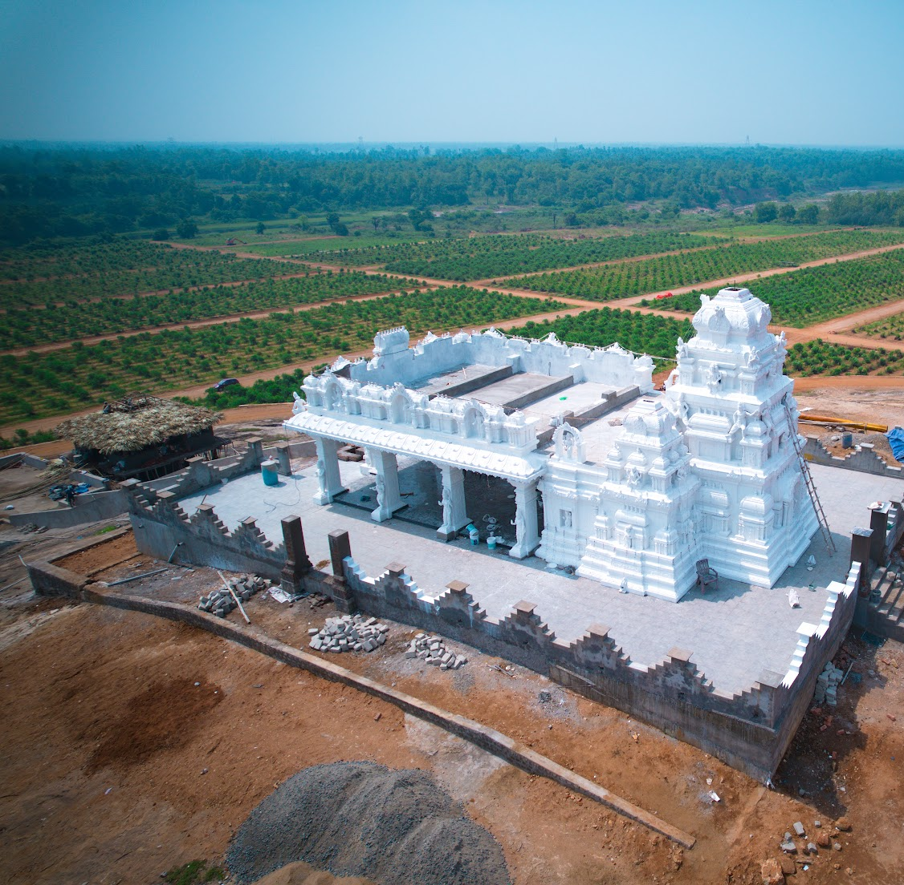

Nestled in the serene village of Marepalli, the Sri Sri Sri Sridevi Bhudevi Sametha Kalyana Venkateswara Swamy Temple is a monument of unwavering devotion and architectural brilliance. Conceived by faithful devotees, this temple stands not just as a place of worship, but as a spiritual anchor for the community—bringing the divine grace of Lord Venkateswara closer to the people of Anakapalli District.
Construction Timeline
నిర్మాణ దశలు
Bhoomi Pooja & Foundation
భూమి పూజ మరియు శంకుస్థాపన
The sacred foundation stone was laid amidst Vedic chants, marking the beginning of the divine endeavor to construct the temple.

Main Sanctum Construction
గర్భగుడి నిర్మాణం
The Garbhagriha (Main Sanctum) architecture started taking shape, adhering strictly to traditional Agama Shastra guidelines.

Gopuram & Mandapam
గోపురం మరియు మండపం
Ongoing work focuses on the intricate sculpting of the Rajagopuram and the Kalyana Mandapam.